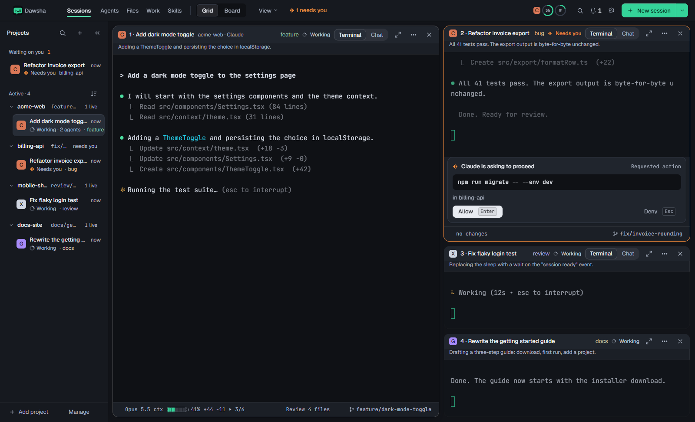

1. Rewind to any turn
Undo in 1.8.5 only covers the last reply. Every message already has a snapshot, so hovering any message you sent shows Rewind to here. It puts the project back to just before that message, after a confirm that lists the files.
src/upload/client.ts+38−6Uploads now retry up to 3 times with exponential backoff.
Each retry logs upload.retry with attempt and delayMs.
tests/upload/retry.test.ts+64Added 4 tests. All pass.
Hovering a sent message shows quiet text actions under it, like the time and copy buttons today. No new chrome.
Rewind to before “Add retry with backoff to the upload client”?
These 4 files go back to how they were at 10:42. Files you changed yourself after that are left alone.
The confirm names the message and every file. The button gives the count.
Uploads now retry up to 3 times with exponential backoff.
Added 4 tests. All pass.
Afterwards the later turns stay readable but dimmed, under one line with Redo.
- Files only. Like Undo, this does not touch the branch, staged files or edits made outside the agent.
- If a file changed after the snapshot outside the agent, it is left out and listed under it as “changed since, kept”.
- Open: should rewinding also rewind Claude's conversation (its own
/rewind)? See open questions.
2. Edit an earlier message and send it again
Edit turns your bubble into a text box in place. Sending rewinds the files to that message's snapshot first, then sends the new text. One step instead of rewind plus retype.
src/upload/client.ts+38−6Uploads now retry up to 3 times with exponential backoff.
Later turns dim while you edit, so you can see what will be replaced. Esc cancels; Ctrl+Enter sends.
- Nothing goes to the agent until Send. The file list behind “4 files” is the same list the rewind confirm shows, available on hover.
- If the agent is working, Edit is disabled with the tooltip “Stop the agent first”.
3. Context meter
The bar under the chat box shows how full the context window is. Click it for a breakdown. Past 85% a quiet note offers Compact now, so the agent doesn't auto-compact in the middle of a task.
Moved invoice totals into billing/totals.ts and updated 9 callers.
At rest it is grey and small. The popover reuses the selectMenu look; the commands are shown as quiet grey text.
One note, shown once per session at 85%. Not now hides it until the next compact.
- Claude reports usage per turn in its log. Codex reports it in its rollout. Gemini shows no meter.
- Open: the breakdown needs per-category counts. If the log only gives a total, the popover shows the total and the two actions.
4. Model and effort in the chat box
The bottom-left of the chat box shows the session's model and effort. Clicking opens a short menu. Choosing sends /model (Claude) or the Codex equivalent for you, and the change shows as a quiet row in the thread.
The selected model is a pressed background, and effort uses the underline tabs. No outlined chips.
- The list comes from what the agent itself offers (the
/modelpicker we already read for chat), so it never goes stale. - Disabled while the agent is working, with the tooltip “Changes after this reply”.
5. Diffs inside the reply summary
Each file row in the summary card opens its diff right there. Small changes can be checked without leaving chat. Review is still one click away for the full view.
Dates without a time zone are now read as UTC.
Same card as 1.8.5, with a chevron per file. Long diffs show the first 40 lines, then “Show all” and “Open in Review”.
6. Clean up worktrees from closed sessions
Sessions with their own worktree leave folders behind. The project menu gets Clean up worktrees…, and a notice offers it when there are more than 3 left over.
Remove 3 worktrees from closed sessions in api-gateway?
Their folders are deleted. Branches stay unless you tick the box. Worktrees with uncommitted changes are not ticked.
- Only worktrees Dawsha created for sessions are listed. Ones you made yourself never are.
- The button count follows the ticks, and the branch option names the branches it would delete.
7. Chat on your phone (Remote Control)
Paired browsers get the same chat view for any session, not just Approvals. Sending needs the existing “Terminal input” permission. Without it, the thread is read-only and says so.
retry.test.ts+644 tests pass. Want me to add one for the 4xx case too?
Phone with input allowed.
Dates without a time zone are now read as UTC.
Phone without the permission.
8. Export usage
Usage gets an Export CSV button. Pick a range and how to group the rows. The file is saved where you choose, and nothing leaves the machine.
Usage
| Project | Agent | Tokens | Cost |
|---|---|---|---|
| web-app | Claude | 9.1M | $71.20 |
| api-gateway | Claude | 5.6M | $44.05 |
| web-app | Codex | 3.7M | $27.55 |
Export usage
Columns: date, project, agent, model, input, output, cache read, cache write, cost.
9. Try another way from here
Rewind throws the later turns away. Try another way keeps them: it starts a second session in its own worktree, from the snapshot before that message. Both attempts then run side by side, and Compare shows which one did better.
Try another way from “Add retry with backoff to the upload client”
A new session starts in its own worktree, with the files as they were at 10:42. This session keeps going untouched.
withRetry helper in src/lib instead of new codewithRetry helper in src/lib instead of new codesrc/lib/withRetry.tssrc/upload/client.tsThe new pane says where it came from. Compare opens the compare view we already have, with both worktrees.
- Sits next to Rewind in a message's hover actions: Edit · Rewind to here · Try another way · Copy.
- When one try wins, Merge back takes it home, and the other's worktree shows up in Clean up worktrees.
10. Second opinion
From a reply's summary card, ask another agent to review what changed. It runs in the background, without opening a pane, and its findings come back as a card. Each finding can go to the working agent in one click.
totals.ts:31 rounds each line before summing, so totals can be off by a cent from the old code.invoice.ts no longer handles an empty lines array; the old code returned 0.The review card sits in the thread like a summary card. Severity is coloured words, not badges.
- Runs the reviewer headless (
codex exec,gemini -p,claude -p) in read-only mode, with the diff and your original message. Its cost counts toward the project's spending limit.
11. Checks after each reply
Pick a few of the project's run commands, such as tests, lint or build, to run whenever an agent finishes a reply that changed files. The results land on the summary card. Failures go back to the agent in one click, or automatically if you turn that on.
Expected: 2026-11-11T08:00:00.000Z
Received: 2026-11-11T10:00:00.000Z
While a check is running, its row shows “running…”. A reply that changed no files runs no checks.
Checks after each reply in web-app
These run in the session's folder after any reply that changes files.
12. Limit reached, keep going
When Claude or Codex hits a usage limit, chat explains it in one card and gives the three things you'd do anyway: carry on in another agent with the existing Continue in…, send the message when the limit resets, or get a reminder.
- Continue in Codex opens the handoff dialog we already have, with this message filled in.
- Send at 15:40 keeps the message in the queue with “Sends at 15:40” under it. You can edit or remove it until then.
13. Permissions in Settings
One list of what each agent may do without asking, read from the files the agents use: Claude's settings.json at user, project and local level, and Codex's config.toml. Dawsha also suggests rules from what you keep approving.
Permissions
git status 14 times this week. Always allow it in web-app?| Rule | Effect | Set in | |
|---|---|---|---|
| Bash(npm test:*) | Allow | web-app · project | |
| Bash(npm run lint) | Allow | web-app · project | |
| Read(~/.ssh/**) | Deny | User | |
| Bash(git push:*) | Ask | User | |
| WebFetch(domain:docs.stripe.com) | Allow | web-app · local |
Project: web-app ▾ · The ⋯ menu has Edit, Move to another file, Open the file and Remove.
- Remove asks first and names the rule and its file: “Remove
Bash(npm test:*)from web-app/.claude/settings.json?”. - Codex has fewer knobs (approval policy and sandbox mode), so its tab shows those two settings plus its trusted folders.
14. Today
A Today tab in Work: what every agent did today, by project, with sessions that need you first. Copy as notes turns it into a short Markdown summary for a standup or a PR.
Work
- The one-line outcome is the first line of the session's last reply. Nothing is generated or sent anywhere.
15. Commit this reply
The summary card gets Commit. It stages only the files this reply changed and suggests a message built from your request and the agent's answer. Your other edits stay out of the commit.
Commit opens in place on the card. The note says how many other changes are left out, so nothing is committed by surprise.
Afterwards the card shows the commit, and Push and Open pull request use the PR flow we already have.
- If a file was also edited by you or another session since the reply, it is listed with “also has other changes” and left unticked.
- Undo this reply hides once the reply is committed, and the card says to use Revert in Files instead.
16. The plan stays in view
When the agent keeps a todo list, its latest state is pinned to the top of chat as one line: what it is doing now and how far along it is. Click to open the whole list. It no longer scrolls away with the conversation.
src/billing/totals.ts+44src/billing/invoice.tsCollapsed: one quiet row under the pane header.
- ☑ Find every place totals are computed
- ☑ Move the math into billing/totals.ts
- ☑ Add tests for rounding
- ◐ Update callers in invoice.ts
- ☐ Update callers in the PDF export
- ☐ Remove the old helpers
- ☐ Run the full test suite
Open: the same checklist as the todo card, with each state also said in words for screen readers.
- The bar hides when every item is done, or when the list is cleared. Board cards and the pane footer can show the same “3 of 7”.
17. A roomier sidebar
Today the open sidebar crams up to four facts into each 240px row, so names and branches get cut off (“feature…”, “mobile-sh…”, “fix/…”), “now” repeats on every row, and a waiting session is listed twice. The redesign gives each row one job: the first line says what the session is, the second what it's doing.

Now (1.8.5).
Proposed. Shown with the selected row (a plain fill) and a row under the mouse (its actions appear).
- Wider, and you can resize it. 272px by default, drag the edge between 220 and 400. Long names wrap to a second line instead of being cut.
- Project row is just the name. The branch moves to the session's hover card and the pane footer, where it belongs (each worktree can have its own). “1 live” becomes a small coloured dot per session state: blue working, orange needs you, green done.
- Session line 2 says what it's doing, taken from the agent's own recap or its last tool line: “Running the test suite”, “Run npm run migrate?”, “Done · 4 files changed”. Tags move to the hover card.
- Time only when it means something: how long it has worked or waited, or since it finished. No “now” on every row.
- Needs you is listed once. In its project the session is dimmed with “Waiting, listed above”, so nothing is shown twice in full.
- Find at the top. The search icon becomes a field that filters sessions and projects as you type. Ctrl+K still opens the palette.
- Closed sessions fold into one line per project, “2 closed today”, which opens the Resume picker for that project.
- Quiet rows. Selection is a background fill, no outlines or side bars. Close and ⋯ show on hover and keyboard focus only.
Open questions
- Rewind and the conversation. Files go back, but the agent still remembers the later turns. For Claude we could also drive its own
/rewindso its memory matches. That's more fragile, since it means driving a picker in the terminal. Ship files-only first? - Edit and send for Codex. Codex has no rewind of its own. Should Edit for Codex start the edited message with “Ignore my earlier request: …”, or only offer Rewind?
- Context meter detail. Total plus actions only, or the breakdown too if we can get it reliably?
- Second opinion and checks cost money and time. Both are off until you turn them on per project, as drawn. OK?
- Permissions writes. This edits the agents' own settings files. Is that OK, or should 1.8.6 show the rules read-only with Open the file?
- Scope. 1–8 are approved. Pick which of 9–17 go into 1.8.6. My pick: 9, 11, 12, 15, 16 and 17, since they build on what exists, and 10, 13 and 14 for 1.8.7.